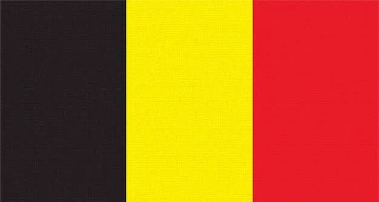
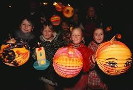

Sint Maarten's Day

Sint Maarten's Day
~~~~~~~~~~~~~~~~~~~~~~~~~~~~~~~~~~~~~~~~~~~~~~~~~~~~~~~~~~~~~~~~~~~~~~~~~~~~~~~~~~~~~~~~~~~~~~~~
In the Netherlands, people don’t celebrate Halloween in the same way it’s celebrated in America. Instead, they have a similar holiday called St. Maarten’s Day, which takes place on November 11th. On this day, children go from door to door carrying colorful homemade lanterns, singing traditional songs, and receiving small treats like candy or fruit in return.
The celebration is rooted in the story of Saint Martin of Tours, a kind soldier who shared his cloak with a beggar during a snowstorm. While it doesn’t involve spooky costumes or haunted houses like Halloween, St. Maarten’s Day shares the same spirit of community, generosity, and fun for children.
Other Traditions